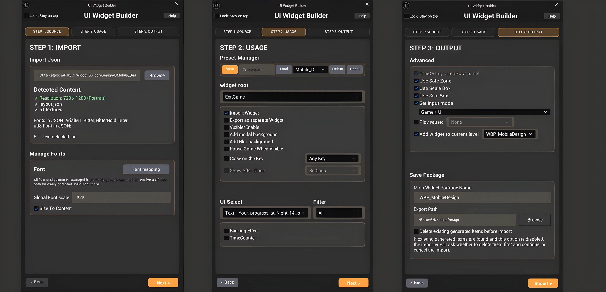

Unreal Importer
Wizard & Output
How to create Widget Blueprints, detached widgets, generated assets, Add To Level logic, and clean imports.
Importer wizard overview
The Unreal importer is the editor-side half of the plugin. It reads layout.json, imports textures, creates Widget Blueprints, and optionally generates Blueprint graph logic.

| Step | Purpose |
|---|---|
| Step 1 — Source | Select the exported folder containing layout.json and Textures/. Choose resolution and source settings. |
| Step 2 — Widget roots | Choose which root screens to import, which to detach into their own Widget Blueprints, and root-level behavior options. |
| Step 3 — Output | Set package names, export path, wrappers, input mode, Add To Level, delete existing generated items, advanced generation options, and saved preset path behavior. |
Generated assets and clean import
The Content path controls where generated Widget Blueprints and textures are created. For clean iteration, the importer can delete generated items before importing.
| Control | Meaning |
|---|---|
| Widget Package Name | Main/host Widget Blueprint name, such as WBP_MainMenu, WBP_Loading, or WBP_UIHost. |
| Export Path | Unreal Content path where generated assets are created, such as /Game/UI/MainMenu. |
| Saved preset path | The importer can remember the preset path so users can load and save presets from the same location faster on future imports. |
| Detached package names | Separate WBP names for roots marked as detached, for example WBP_Settings. |
| Delete existing generated items before import | Force-deletes previously generated Widget Blueprints in the export path and the generated Textures folder before creating fresh assets. |
This is a delete-before-import system, not an overwrite system. It removes old generated assets first, then imports fresh assets.
Close any open Widget Blueprint tabs for generated assets before using this option.
The importer resolves font mapping without needing to open the Font Mapping popup first, keeps Regular/Bold style matching, applies placeholder fonts to ETB/ETM text inputs, infers wrapped multiline TextBlocks from exported bounds when needed, and protects checkbox-group label clicks by setting those texts to remove hit test.
The Change to Common Animated Switcher option requires the Unreal CommonUI plugin. Enable CommonUI before import when using animated switchers. UE 5.6 uses normal WidgetSwitcher behavior.
Font support and resolve behavior
The importer reads the Photoshop font family, style, weight, italic/faux italic, font size, line height, and tracking from layout.json. It then tries to resolve that data to a matching Unreal font asset.
How resolve works
Explicit Font Mapping is used first when available. If no manual mapping is set, the importer tries project font asset names based on family and style, such as Regular or Bold. If no asset is found, the widget is still created and Unreal uses its default font.
Input widgets
ETB_, ETBM_, and ETM_ use their child TXT_ placeholder/text layer for font data. BG_ supplies the input background states.
See the dedicated Font Mapping & Font Support page for missing-font fallback, Regular/Bold style matching, ArialMT handling, and the recommended setup workflow.
Per-screen root options
| Option | Effect |
|---|---|
| Import Widget | Include this root screen in the generated output. |
| Export as separate Widget | Create this root as its own Widget Blueprint instead of embedding it in the host WBP. |
| Visible at Start | Whether the root starts visible in its generated widget. |
| Create Modal Background | Creates a modal background layer for the root. |
| Create Blur Background | Creates a blur-style background layer. |
| Close on Escape / Back | Generates input logic to close/hide this root when the key is pressed. |
| Close on Key | Lets a specific key trigger the close behavior. |
| Show After Current Widget Closed | Shows another root after this root closes. For detached targets, the importer creates and adds that widget to the viewport. |
| Pause Game When Visible | Generates pause/unpause behavior when the root appears or closes. |
| Play Music When Visible | When Add To Level is used, selected music can play in the Level Blueprint after the selected widget is created and added to viewport. |
Level Blueprint generation
When enabled, the importer can add a generated node chain to the current Level Blueprint.
Event BeginPlay
→ UIWB_ADD_TO_LEVEL sequence
→ CreateWidget(selected WBP)
→ AddToViewport
→ PlaySound2D(selected music, if enabled)Music is generated in the Level Blueprint after widget creation, not inside the generated widget Construct graph.